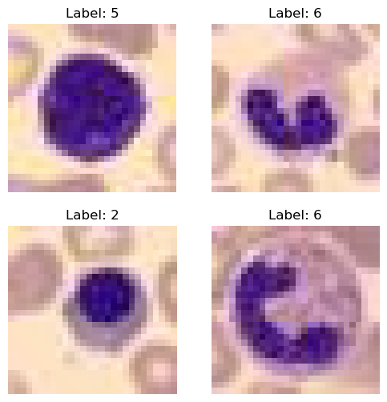
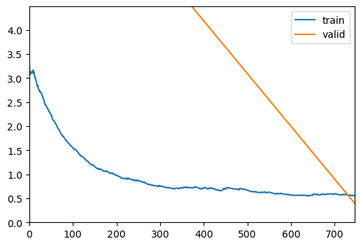
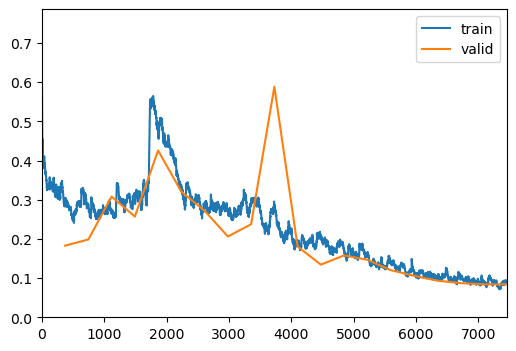
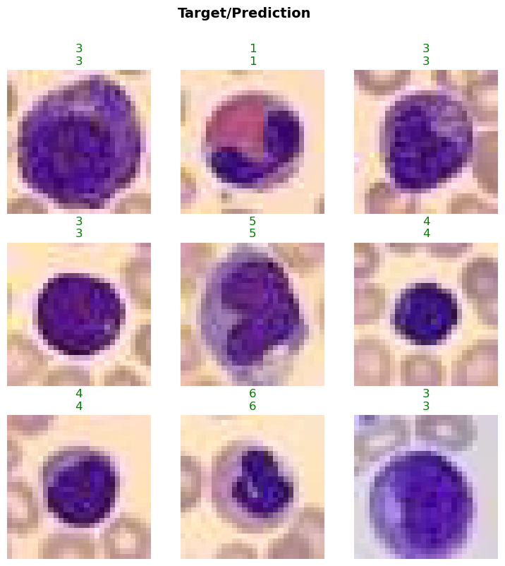
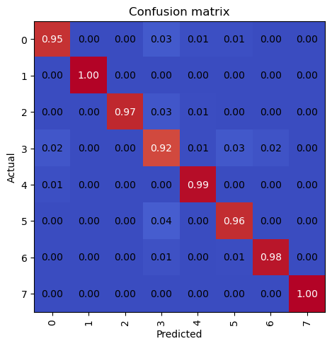
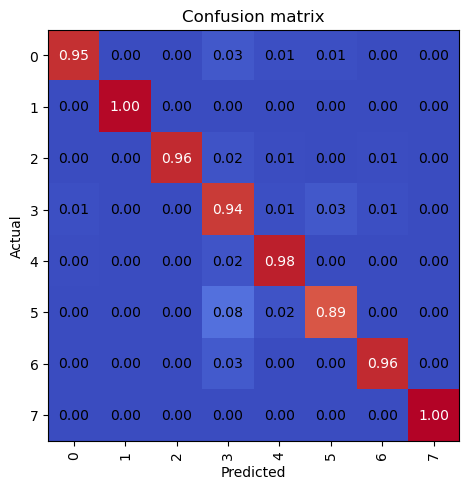

from bioMONAI.data import *
from bioMONAI.transforms import *
from bioMONAI.core import *
from bioMONAI.core import Path
from bioMONAI.data import get_image_files, get_target, RandomSplitter
from bioMONAI.nets import BasicUNet, DynUNet
from bioMONAI.losses import *
from bioMONAI.metrics import *
from bioMONAI.datasets import download_medmnist
from fastai.vision.all import CategoryBlock, GrandparentSplitter, parent_label, resnet34, CrossEntropyLossFlat, accuracyTutorial Classification
Tutorial Classification
device = get_device()
print(device)cudaDownload Data
image_path = '../_data/medmnist_data/'
info = download_medmnist('bloodmnist', image_path, download_only=True)
infoDataset 'bloodmnist' is already downloaded and available in '../_data/medmnist_data/bloodmnist'.{'python_class': 'BloodMNIST',
'description': 'The BloodMNIST is based on a dataset of individual normal cells, captured from individuals without infection, hematologic or oncologic disease and free of any pharmacologic treatment at the moment of blood collection. It contains a total of 17,092 images and is organized into 8 classes. We split the source dataset with a ratio of 7:1:2 into training, validation and test set. The source images with resolution 3×360×363 pixels are center-cropped into 3×200×200, and then resized into 3×28×28.',
'url': 'https://zenodo.org/records/10519652/files/bloodmnist.npz?download=1',
'MD5': '7053d0359d879ad8a5505303e11de1dc',
'url_64': 'https://zenodo.org/records/10519652/files/bloodmnist_64.npz?download=1',
'MD5_64': '2b94928a2ae4916078ca51e05b6b800b',
'url_128': 'https://zenodo.org/records/10519652/files/bloodmnist_128.npz?download=1',
'MD5_128': 'adace1e0ed228fccda1f39692059dd4c',
'url_224': 'https://zenodo.org/records/10519652/files/bloodmnist_224.npz?download=1',
'MD5_224': 'b718ff6835fcbdb22ba9eacccd7b2601',
'task': 'multi-class',
'label': {'0': 'basophil',
'1': 'eosinophil',
'2': 'erythroblast',
'3': 'immature granulocytes(myelocytes, metamyelocytes and promyelocytes)',
'4': 'lymphocyte',
'5': 'monocyte',
'6': 'neutrophil',
'7': 'platelet'},
'n_channels': 3,
'n_samples': {'train': 11959, 'val': 1712, 'test': 3421},
'license': 'CC BY 4.0'}Create Dataloader
batch_size = 32
path = Path(image_path)/'bloodmnist'
path_train = path/'train'
path_val = path/'val'
data_ops = {
'blocks': (BioImageBlock(cls=BioImageMulti), CategoryBlock()),
'get_items': get_image_files,
'get_y': parent_label,
'splitter': GrandparentSplitter(train_name='train', valid_name='val'),
'item_tfms': [ScaleIntensity(min=0.0, max=1.0), RandRot90(prob=0.5), RandFlip(prob=0.5)],
'bs': batch_size,
}
data = BioDataLoaders.from_source(
path,
show_summary=False,
**data_ops,
)
# print length of training and validation datasets
print('train images:', len(data.train_ds.items), '\nvalidation images:', len(data.valid_ds.items))train images: 11959
validation images: 1712data.show_batch(max_n=4)
Load and train a 2D model
model = resnet34
loss = CrossEntropyLossFlat()
metrics = accuracy
trainer = visionTrainer(data, model, loss_fn=loss, metrics=metrics, show_summary=True)Sequential (Input shape: 32 x 3 x 28 x 28)
============================================================================
Layer (type) Output Shape Param # Trainable
============================================================================
32 x 64 x 14 x 14
Conv2d 9408 True
BatchNorm2d 128 True
ReLU
____________________________________________________________________________
32 x 64 x 7 x 7
MaxPool2d
Conv2d 36864 True
BatchNorm2d 128 True
ReLU
Conv2d 36864 True
BatchNorm2d 128 True
Conv2d 36864 True
BatchNorm2d 128 True
ReLU
Conv2d 36864 True
BatchNorm2d 128 True
Conv2d 36864 True
BatchNorm2d 128 True
ReLU
Conv2d 36864 True
BatchNorm2d 128 True
____________________________________________________________________________
32 x 128 x 4 x 4
Conv2d 73728 True
BatchNorm2d 256 True
ReLU
Conv2d 147456 True
BatchNorm2d 256 True
Conv2d 8192 True
BatchNorm2d 256 True
Conv2d 147456 True
BatchNorm2d 256 True
ReLU
Conv2d 147456 True
BatchNorm2d 256 True
Conv2d 147456 True
BatchNorm2d 256 True
ReLU
Conv2d 147456 True
BatchNorm2d 256 True
Conv2d 147456 True
BatchNorm2d 256 True
ReLU
Conv2d 147456 True
BatchNorm2d 256 True
____________________________________________________________________________
32 x 256 x 2 x 2
Conv2d 294912 True
BatchNorm2d 512 True
ReLU
Conv2d 589824 True
BatchNorm2d 512 True
Conv2d 32768 True
BatchNorm2d 512 True
Conv2d 589824 True
BatchNorm2d 512 True
ReLU
Conv2d 589824 True
BatchNorm2d 512 True
Conv2d 589824 True
BatchNorm2d 512 True
ReLU
Conv2d 589824 True
BatchNorm2d 512 True
Conv2d 589824 True
BatchNorm2d 512 True
ReLU
Conv2d 589824 True
BatchNorm2d 512 True
Conv2d 589824 True
BatchNorm2d 512 True
ReLU
Conv2d 589824 True
BatchNorm2d 512 True
Conv2d 589824 True
BatchNorm2d 512 True
ReLU
Conv2d 589824 True
BatchNorm2d 512 True
____________________________________________________________________________
32 x 512 x 1 x 1
Conv2d 1179648 True
BatchNorm2d 1024 True
ReLU
Conv2d 2359296 True
BatchNorm2d 1024 True
Conv2d 131072 True
BatchNorm2d 1024 True
Conv2d 2359296 True
BatchNorm2d 1024 True
ReLU
Conv2d 2359296 True
BatchNorm2d 1024 True
Conv2d 2359296 True
BatchNorm2d 1024 True
ReLU
Conv2d 2359296 True
BatchNorm2d 1024 True
AdaptiveAvgPool2d
AdaptiveMaxPool2d
____________________________________________________________________________
32 x 1024
Flatten
BatchNorm1d 2048 True
Dropout
____________________________________________________________________________
32 x 512
Linear 524288 True
ReLU
BatchNorm1d 1024 True
Dropout
____________________________________________________________________________
32 x 8
Linear 4096 True
____________________________________________________________________________
Total params: 21,816,128
Total trainable params: 21,816,128
Total non-trainable params: 0
Optimizer used: <function Adam>
Loss function: FlattenedLoss of CrossEntropyLoss()
Callbacks:
- TrainEvalCallback
- CastToTensor
- Recorder
- ProgressCallback
- ShowGraphCallbacktrainer.fine_tune(20, freeze_epochs=2)| epoch | train_loss | valid_loss | accuracy | time |
|---|---|---|---|---|
| 0 | 0.719254 | 4.485533 | 0.747079 | 00:10 |
| 1 | 0.553465 | 0.398749 | 0.878505 | 00:09 |

| epoch | train_loss | valid_loss | accuracy | time |
|---|---|---|---|---|
| 0 | 0.295622 | 0.182824 | 0.932243 | 00:09 |
| 1 | 0.289351 | 0.198575 | 0.930491 | 00:09 |
| 2 | 0.266295 | 0.307977 | 0.887266 | 00:09 |
| 3 | 0.304498 | 0.256945 | 0.910047 | 00:09 |
| 4 | 0.471946 | 0.425594 | 0.849883 | 00:09 |
| 5 | 0.334629 | 0.320543 | 0.893107 | 00:09 |
| 6 | 0.279406 | 0.271940 | 0.905958 | 00:10 |
| 7 | 0.275094 | 0.206208 | 0.929322 | 00:09 |
| 8 | 0.287236 | 0.237373 | 0.918808 | 00:09 |
| 9 | 0.288240 | 0.588181 | 0.874416 | 00:09 |
| 10 | 0.191900 | 0.180611 | 0.930491 | 00:09 |
| 11 | 0.199488 | 0.134273 | 0.952103 | 00:09 |
| 12 | 0.172956 | 0.158020 | 0.944509 | 00:09 |
| 13 | 0.155577 | 0.146773 | 0.946846 | 00:09 |
| 14 | 0.143653 | 0.120378 | 0.960864 | 00:09 |
| 15 | 0.119647 | 0.105949 | 0.962033 | 00:09 |
| 16 | 0.096059 | 0.093498 | 0.962617 | 00:10 |
| 17 | 0.098746 | 0.087264 | 0.970210 | 00:10 |
| 18 | 0.089791 | 0.084029 | 0.970210 | 00:10 |
| 19 | 0.084551 | 0.084002 | 0.971963 | 00:09 |

evaluate_classification_model(trainer, most_confused_n=5)
Most Confused Classes:[('3', '5', 9), ('3', '0', 7), ('5', '3', 6), ('3', '6', 5)]

# trainer.save('tmp-model')Test data
Evaluate the performance of the selected model on unseen data. It’s important to not touch this data until you have fine tuned your model to get an unbiased evaluation!
path_test = path/'test'
test_data = data.test_dl(get_image_files(path_test), with_labels=True)
# print length of test dataset
print('test images:', len(test_data))test images: 107evaluate_classification_model(trainer, test_data)
Most Confused Classes:[('5', '3', 24), ('6', '3', 22), ('3', '5', 18), ('0', '3', 7), ('2', '3', 6), ('3', '4', 6), ('3', '6', 6), ('3', '0', 5), ('4', '3', 5), ('5', '4', 5), ('0', '4', 2), ('0', '5', 2), ('2', '4', 2), ('2', '6', 2), ('6', '2', 2), ('1', '0', 1), ('1', '3', 1), ('1', '5', 1), ('2', '0', 1), ('4', '0', 1), ('5', '0', 1), ('6', '1', 1)]
